Session 16 · Wed Nov 4 · Book sections 3.4–3.6
🎯
A town must decide whether a storm warrants a landslide warning. A seismic network must decide what each event is. What does a classifier give them, and how do we grade it?
| Part | Book section | What we do | Data |
|---|---|---|---|
| 1. Binary | 3.4 | two classes, every metric, rare events, thresholds, balancing | landslide days in Sitka; explosions and earthquakes |
| 2. Multiclass | 3.5 | per-class scores, macro and micro averages, the leaderboard | four Pacific Northwest source types; Swiss avalanche danger levels |
| 3. Logistic regression | 3.6 | the simplest classifier: score, probability, weights, calibration | the same seismic events and landslide days |
📍 In-situ sensor 💧 Land water ⛰️ Geology & geomorphology
Class to predict: did a landslide start on this day, near the road network?
5 landslide days out of 6,606 days of rainfall records, 2002 to 2020
99.92% accuracy of never issuing a warning
A storm on 18 August 2015 started over 40 landslides; a debris flow killed three people.
The decision: what rainfall, or what probability, should trigger a warning?
Patton et al. (2023), Nat. Hazards Earth Syst. Sci. 23, 3261–3284, Fig. 1. doi:10.5194/nhess-23-3261-2023. CC BY 4.0.
Explosion or earthquake? 500 test events, threshold 0.5, positive class explosion.
| Analyst | Predicted explosion | Predicted earthquake |
|---|---|---|
| explosion | TP 217 | FN 33 |
| earthquake | FP 16 | TN 234 |
TP, FN, FP, TN: true positive, false negative, false positive, true negative.
📍 In-situ sensor 🪨 Solid Earth 📈 Seismology
Logistic regression on 61 waveform features. Zenodo record 14025693.
| Metric | Formula | The question it answers | Value |
|---|---|---|---|
| Accuracy | (TP + TN) / all | what fraction is right? | .902 |
| Recall (sensitivity) | TP / (TP + FN) | of real explosions, how many are caught? | .868 |
| Specificity | TN / (TN + FP) | of real earthquakes, how many kept? | .936 |
| Precision | TP / (TP + FP) | of events called explosions, how many were? | .931 |
| Balanced accuracy | mean of recall and specificity | accuracy with both classes equal | .902 |
| F1 | 2 × precision × recall / sum | high only if both are high | .899 |
| Matthews correlation (MCC) | correlation of truth, prediction | uses all four cells, −1 to 1 | .806 |
| ROC AUC | area, recall against false-positive rate | ranking, over all thresholds | .963 |
| Average precision (AP) | area, precision against recall | the trigger list, over all thresholds | .963 |
| Metric | 50% explosions | 5% explosions |
|---|---|---|
| Never predict explosion (accuracy) | .500 | .950 |
| Accuracy | .902 | .965 |
| ROC AUC | .963 | .940 |
| Balanced accuracy | .902 | .755 |
| Precision | .931 | .717 |
| F1 | .899 | .602 |
| MCC | .806 | .593 |
| Average precision | .963 | .621 |
| Recall | .868 | .521 |
.965 accuracy, 1.5 points above never predicting an explosion
.521 recall: about half of the explosions are missed
5%: 53 explosions with all 1,000 earthquakes, trained and scored by 5-fold cross-validation, mean of 20 random subsets. 50%: test split of the previous slide.
Same features, same model. Accuracy rose while recall fell from .868 to .521. Report recall and precision of the rare class, never accuracy alone.
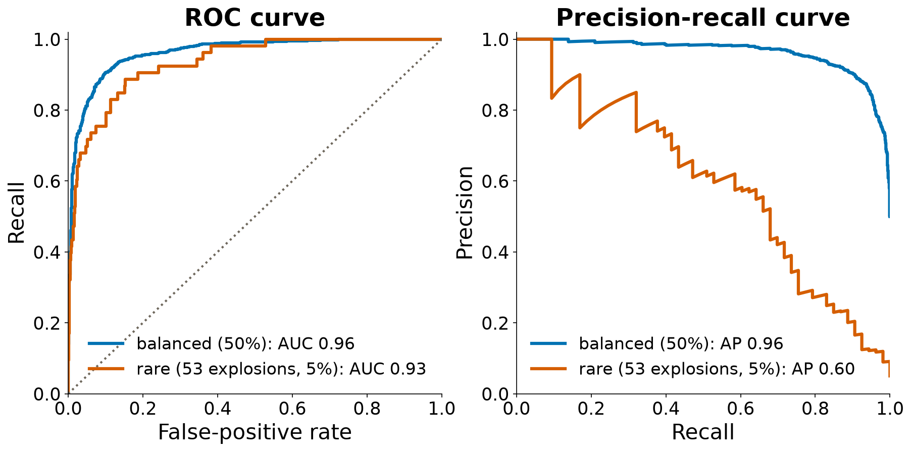
Rare explosions move the ROC curve little and the precision-recall curve a lot: the false-positive rate divides by all earthquakes, precision by the trigger list. One subset shown (AUC .93, AP .60); over 20 subsets, .94 and .62.
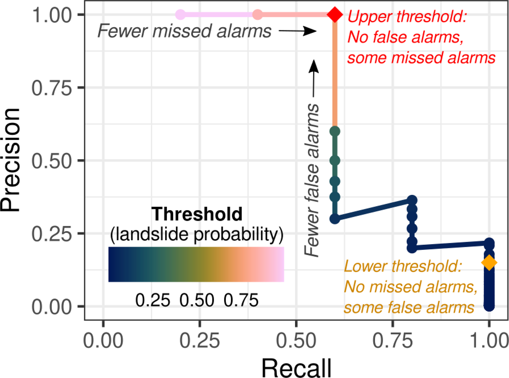
| Daily probability | Hazard level | Recall | Precision |
|---|---|---|---|
| below 0.01 | low | ||
| 0.01 to 0.70 | moderate | 1.0 | 0.15 |
| above 0.70 | high | 0.6 | 1.0 |
At 0.01: no missed landslide day, 28 false alarms in 18 years. At 0.70: no false alarm, 3 of 5 days caught.
Emergency responders preferred fewer false alarms; other residents accepted more alarms. The thresholds were set with that input.
Patton et al. (2023), Fig. 11. CC BY 4.0. The caption gives 0.1 for the lower threshold; the text and the warning levels give 0.01.
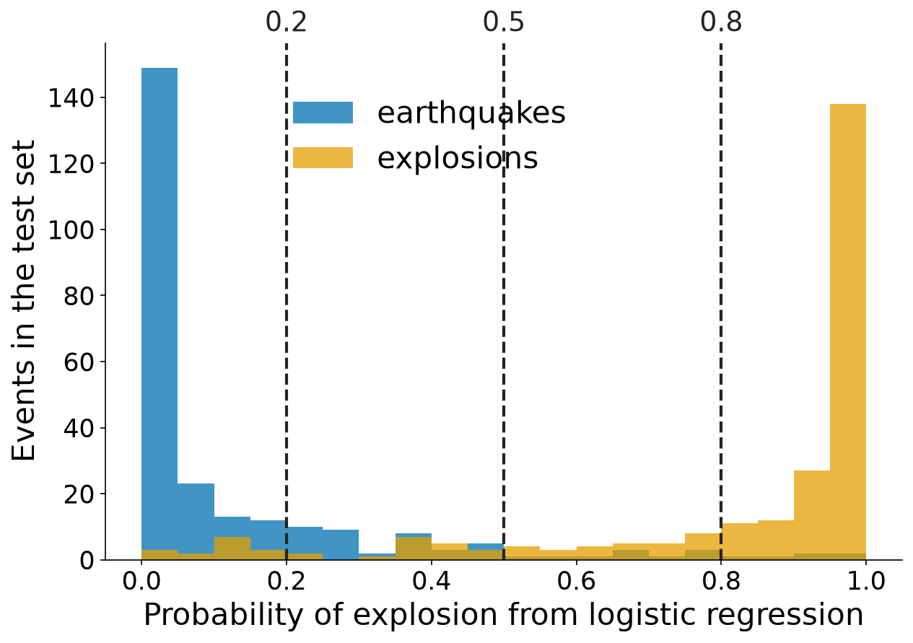
| Threshold | Precision | Recall | Specificity | Missed | False alarms |
|---|---|---|---|---|---|
| 0.2 | .816 | .940 | .788 | 15 | 53 |
| 0.5 | .931 | .868 | .936 | 33 | 16 |
| 0.8 | .969 | .752 | .976 | 62 | 6 |
Out of 250 explosions and 250 earthquakes. Missed blasts stay in the earthquake catalog and bias hazard statistics. False alarms remove real earthquakes, or cost an analyst’s time.
Explosions pile up near 1 and earthquakes near 0. The threshold slides through the overlap.
Nothing was refit. F1 favors 0.5 (.899) because it weighs the two errors equally; a catalog curator who pays more for a missed blast should choose 0.2.
Proper order: split first; balance the training set only; score validation and test sets at the proportion you will meet in operation.
| Case | Train | Test | Precision | Recall |
|---|---|---|---|---|
| Balanced lab test | 50% | 50% | .931 | .868 |
| Same model, deployed | 50% | 5% | .417 | .868 |
| Same model, deployed | 50% | 1% | .120 | .868 |
| Same model, Sitka’s rarity | 50% | 0.08% | .011 | .868 |
| Proper test, no balancing | 5% | 5% | .704 | .500 |
| Proper test, class weights | 5% | 5% | .355 | .775 |
Share of explosions in each set. Deployed rows: recall .868 and false-positive rate .064 of the 50% test, applied to the new proportion. Last rows: logistic regression, 5-fold, mean of 10 subsets.
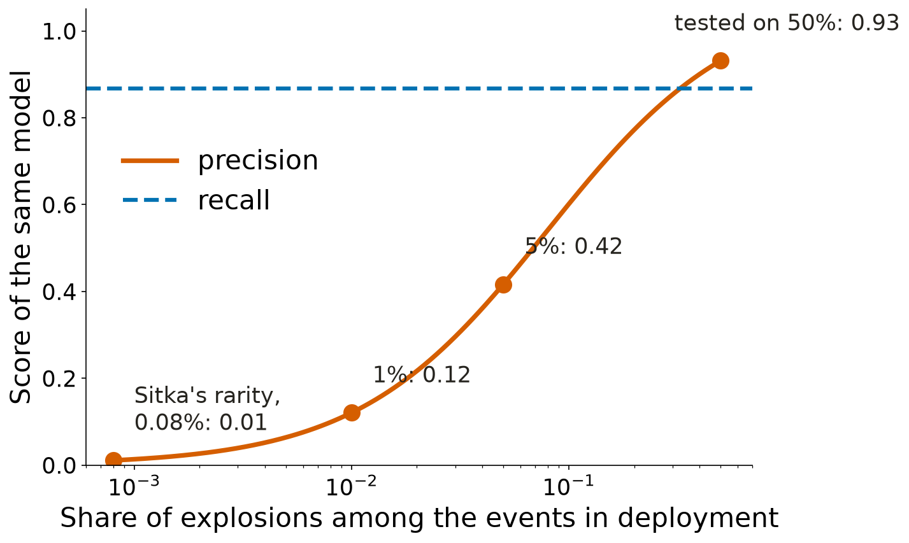
Recall does not depend on the proportion; precision does. False alarms per blast caught: 0.07 at 50%, 1.4 at 5%, 7.3 at 1%. A balanced test score does not describe the deployed system.
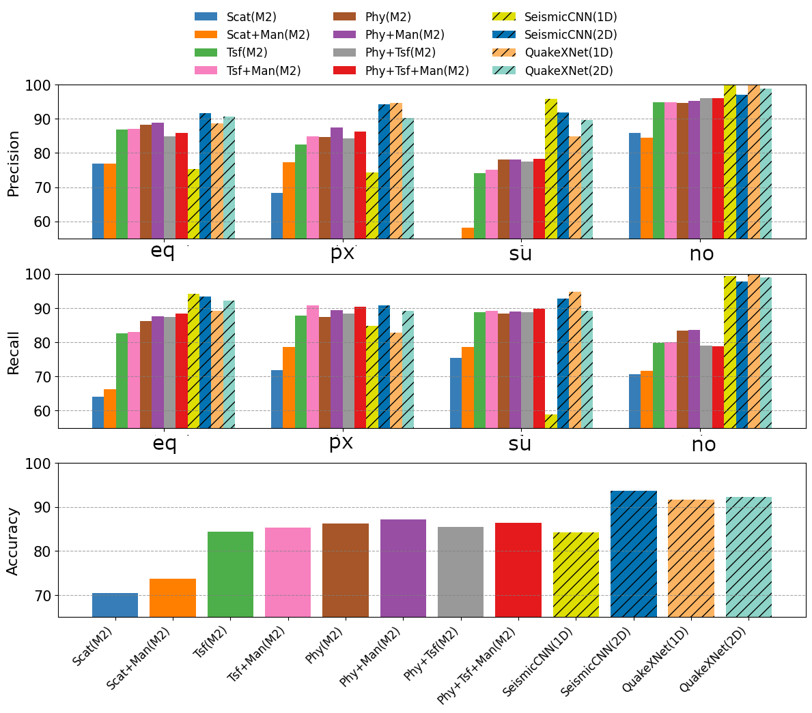
The labeled catalog is 88% earthquakes: 163,064 of 185,081 records.
| Stage | Data |
|---|---|
| Train and benchmark (figure) | curated, 10,000 traces per class, split 80:20 |
| Network test | about 10,000 events from routine operations: class imbalance, incomplete analyst picks, mixed station coverage |
| On the network test | Precision / recall |
|---|---|
| CNN (2D), earthquake | 96% / 95% |
| CNN (2D), explosion | 98% / 93% |
| CNN (2D), surface event | 92% / 97% |
| Random forest, surface event | recall 77% |
The balanced set allows a fair comparison of models; the network test shows how they behave in operation.
Kharita et al. (2026), Seismica 5(1), Fig. 5 and Section 4. CC BY 4.0.
| Strategy | What changes | Precision | Recall | F1 | AP | Brier | Cost |
|---|---|---|---|---|---|---|---|
| No balancing | nothing | .704 | .500 | .584 | .607 | .028 | misses half the explosions |
| Move the threshold to 0.2 | the decision only, no refit | .522 | .704 | .599 | .607 | .028 | more false alarms |
| Class weights | an error on the rare class costs more | .355 | .775 | .487 | .559 | .063 | probabilities inflate |
| Oversample | copies of rare samples in training | .357 | .764 | .486 | .539 | .062 | repeats the same events |
| SMOTE | new samples between rare neighbors | .370 | .745 | .494 | .545 | .058 | points may not be physical |
| Undersample | discards common samples in training | .189 | .826 | .307 | .322 | .144 | discards 95% of earthquakes |
Without a number here: collect more real rare events, as Kharita et al. did by adding stations within 30 km of surface events; augment with transformations that keep the physics (lesson 2.13); merge rare classes, as the avalanche study merged levels 4 and 5.
5% explosions, logistic regression, scored at 5%. Each resampling method raised recall and lowered precision; none beat moving the threshold on F1 or average precision.
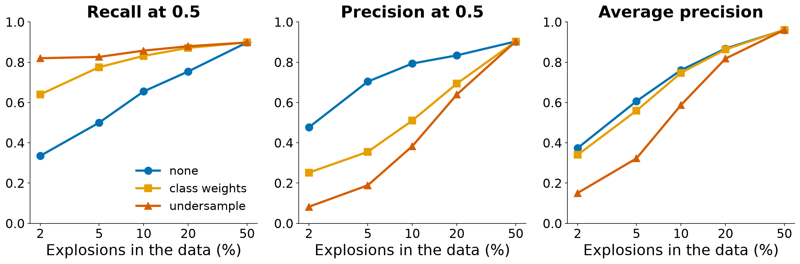
It changes the result when the class is rare (here below about 20%) and you decide at the default 0.5: at 5%, recall .50 → .78 and precision .70 → .36. At 50% nothing changes.
It does not help when you rank events or choose your own threshold: average precision does not improve. The avalanche study tried over- and undersampling, saw no gain, and used class costs instead.
Same data as the previous slide, mean of 10 subsets. Avalanche: Pérez-Guillén et al. (2022), Section 4. CC BY 4.0.
Oversampling before or after the split
Copies of one explosion land in both training and test sets, so the forest recognizes them.
| Forest, 5% | Precision | Recall | F1 |
|---|---|---|---|
| Before split | .990 | 1.000 | .995 |
| After split | .760 | .492 | .590 |
First row: a leak, scored on a balanced test set.
Probabilities after balancing
The model learns the balanced base rate, while only 5% of events are explosions.
| Logistic regression | Mean stated | Brier |
|---|---|---|
| No balancing | .052 | .028 |
| Class weights | .132 | .063 |
| Undersample | .248 | .144 |
| Weights, corrected | .047 | .031 |
Correction: odds × share / (1 − share).
Split first, balance training only. If someone will read your number as a probability, as in Sitka’s warning levels, correct it back to the real base rate.
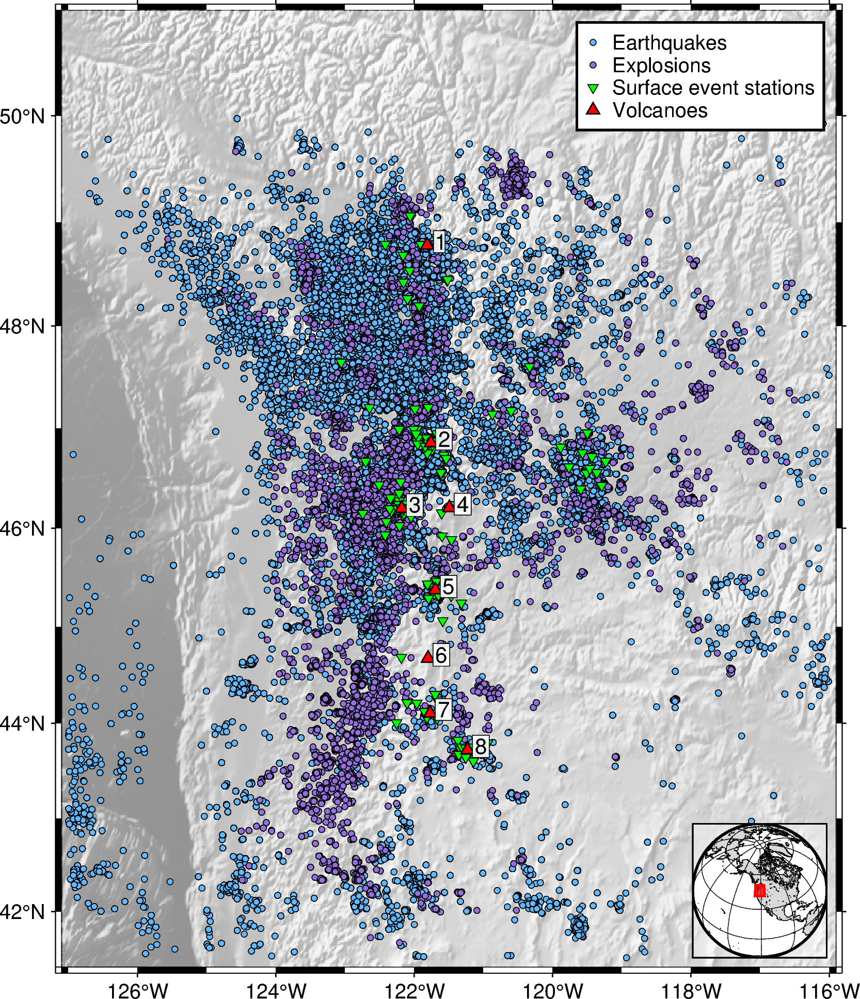
📍 In-situ sensor 🪨 Solid Earth 📈 Seismology
A regional network sorts what it records: earthquake, explosion, surface event, noise. A quarry blast called an earthquake pollutes the catalog; a missed landslide is a missed hazard.
| Curated set in the paper | Our course table | |
|---|---|---|
| Size | ∼200,000 waveforms, >70,000 events | 4 × 1,000 events |
| Input | waveforms, features, spectrograms | 61 physical features |
| Best result | random forest 89%, CNN above 92% | see the next slide |
Kharita, Denolle, Hutko, Hartog and Malone (2026), Seismica 5(1), Fig. 1. doi:10.26443/seismica.v5i1.2068. CC BY 4.0. Catalog: Ni et al. (2023). Course table: Zenodo 14025693.
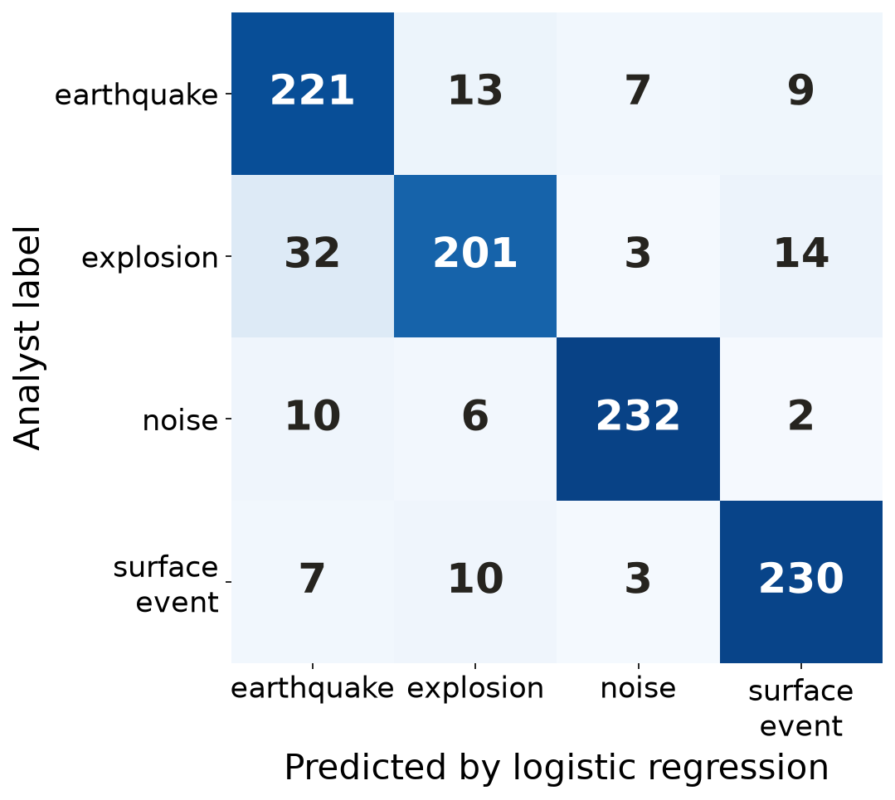
| Class | Precision | Recall | F1 | AUC, one against rest |
|---|---|---|---|---|
| earthquake | .819 | .884 | .850 | .964 |
| explosion | .874 | .804 | .838 | .964 |
| noise | .947 | .928 | .937 | .983 |
| surface event | .902 | .920 | .911 | .983 |
One against the rest, for explosions:
Accuracy .884 hides the structure: 32 explosions called earthquakes is the largest error, and the cost lands on the catalog. Trivial baseline: .25.
| Average | How | 4 × 1,000 | Unequal classes |
|---|---|---|---|
| Macro-F1 | mean of per-class F1, each class equal | .884 | .810 |
| Micro-F1 | pool TP, FP, FN over classes; equals accuracy | .884 | .921 |
| Weighted-F1 | mean of per-class F1, weighted by class size | .884 | .920 |
Unequal set, F1 per class: noise .966 (1,000 events), earthquake .897 (500), surface event .703 (50), explosion .675 (100). Mean of 20 random subsets, 5-fold cross-validation.
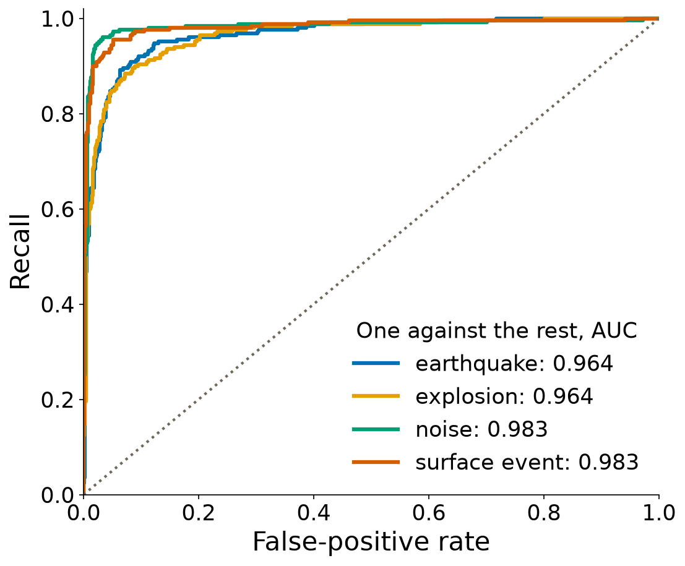
One-against-rest ROC curves, balanced test split.
On balanced data the three agree. With unequal classes, micro follows noise and earthquakes (.921); macro shows the weak rare classes (.810). The leaderboard grades macro-F1.
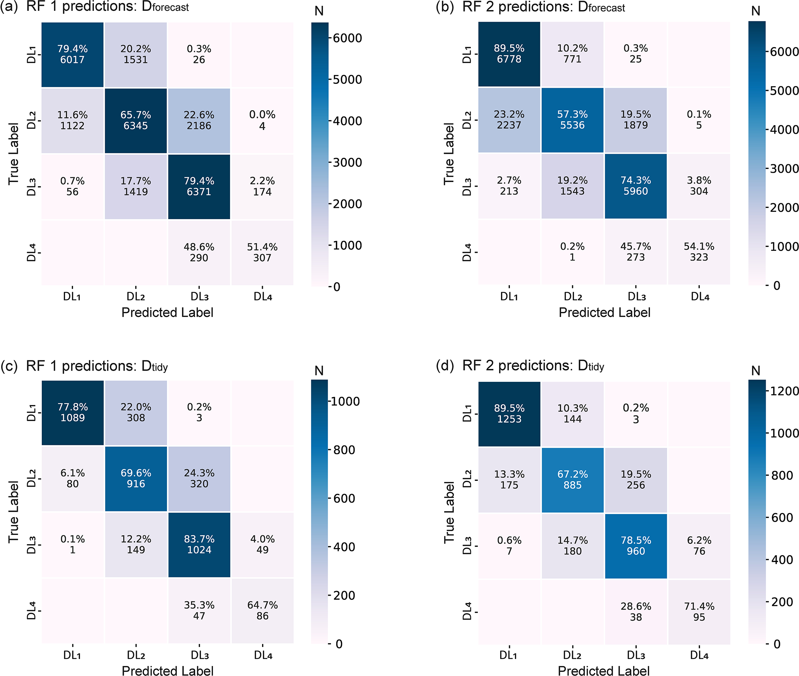
🖥️ Model & simulation 🧊 Cryosphere 🧊 Glaciology
Predict the Swiss avalanche danger level (1 low to 4 high) from weather stations and simulated snow cover.
Pérez-Guillén et al. (2022), Nat. Hazards Earth Syst. Sci. 22, 2031–2056, Fig. 6. doi:10.5194/nhess-22-2031-2022. CC BY 4.0.
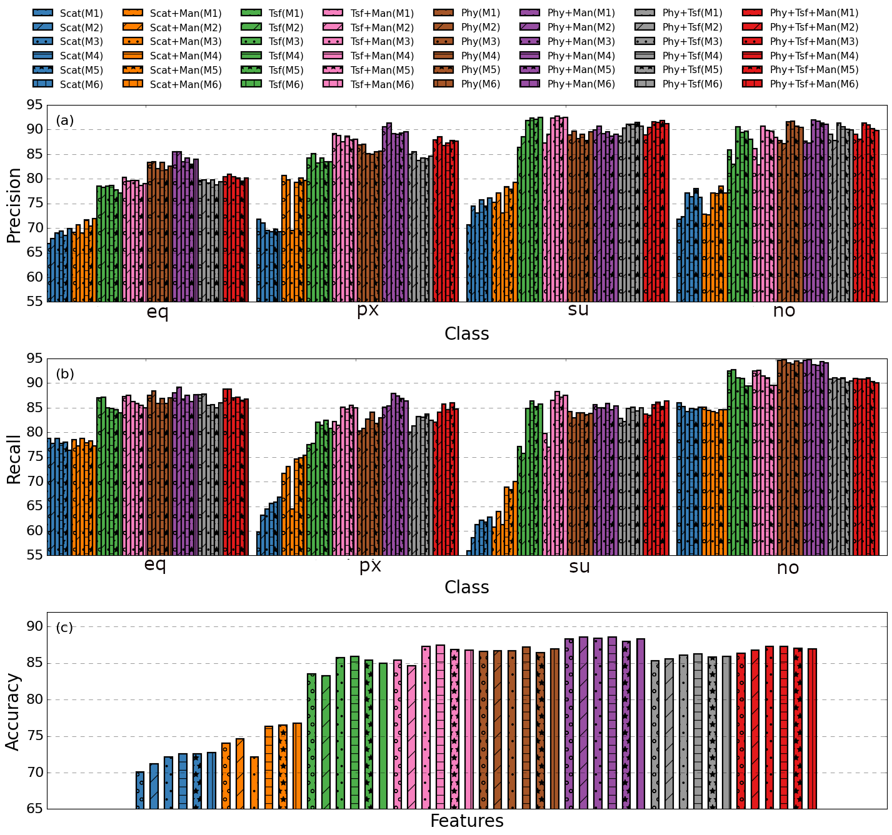
Random forests on the curated Pacific Northwest set: eight feature sets (colors) and six waveform configurations (hatching).
Panels (a, b): precision and recall per class. Panel (c): overall accuracy.
Kharita et al. (2026), Seismica 5(1), Fig. 4. eq earthquake, px explosion, su surface event, no noise. CC BY 4.0.
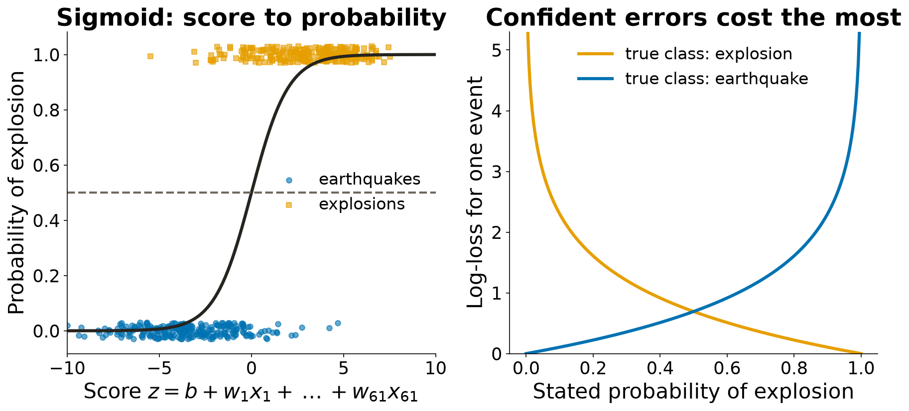
Weighted sum of standardized features, then the sigmoid \(p = 1/(1 + e^{-z})\). Training lowers the mean log-loss \(-[y \ln p + (1-y)\ln(1-p)]\): wrong at 0.99 costs 4.6, wrong at 0.55 costs 0.8.
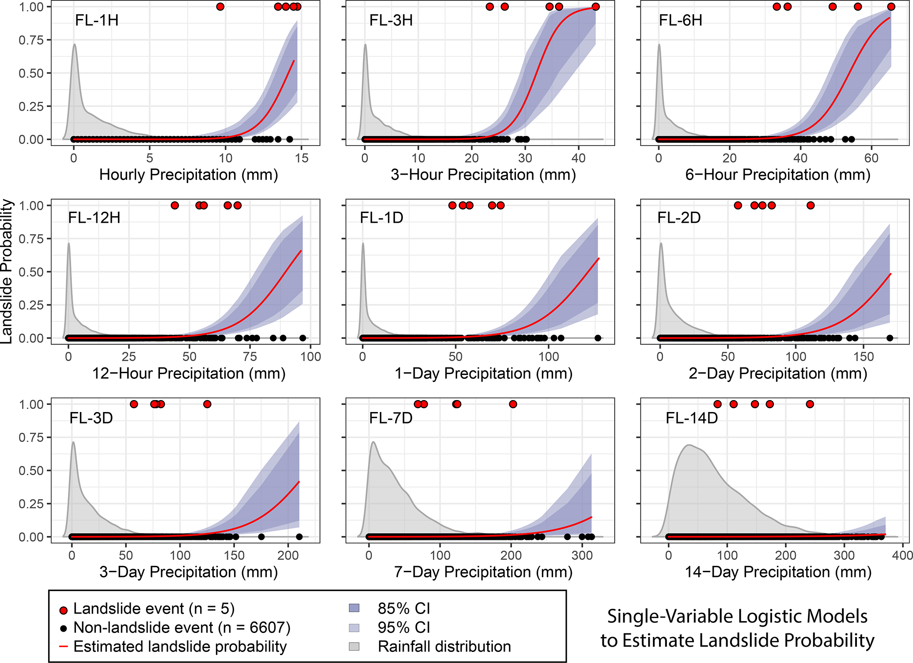
Each panel is one logistic regression: landslide probability against rainfall over one window, from 1 h to 14 d.
The 3 h window fits best. Long windows flatten the curve.
A probability of 0.01 corresponds to 21.3 mm in 3 h.
Patton et al. (2023), Fig. 3. CC BY 4.0.
| Stated probability of the true class | Log-loss |
|---|---|
| 0.99 | 0.01 |
| 0.55 | 0.60 |
| 0.45 | 0.80 |
| 0.01 | 4.61 |
Standardize first, with the training split only: the weights then compare, and the descent converges faster.
Notebook 3.6 writes this loop by hand, then with automatic differentiation in PyTorch. Every network in Chapter 4 is trained with the same loop.
On the four source types, this model reaches macro-F1 .884 on the leaderboard split; the random forest of notebook 3.5 reaches .883.
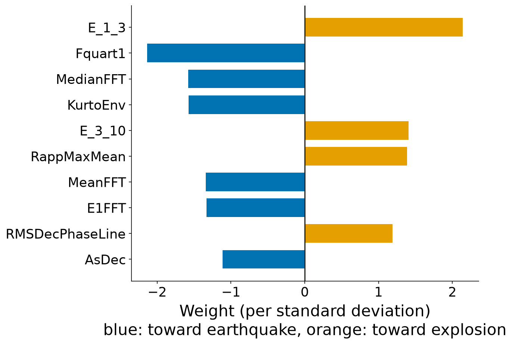
A weight is the change in log-odds per one standard deviation of a feature, with the other features held fixed.
E_1_3) pushes toward explosion. This matches the paper, where explosions emphasize energy at 1–5 HzE_1_3 and Fquart1 have opposite weights of the same size, ±2.14, and correlate at −0.69Band names are read from the feature names in the table. Weights of correlated features share credit, so a single weight is not a physical law.
Weights are one reason to start with logistic regression: each prediction can be traced to the features. Friday’s forest has importances that need more care.
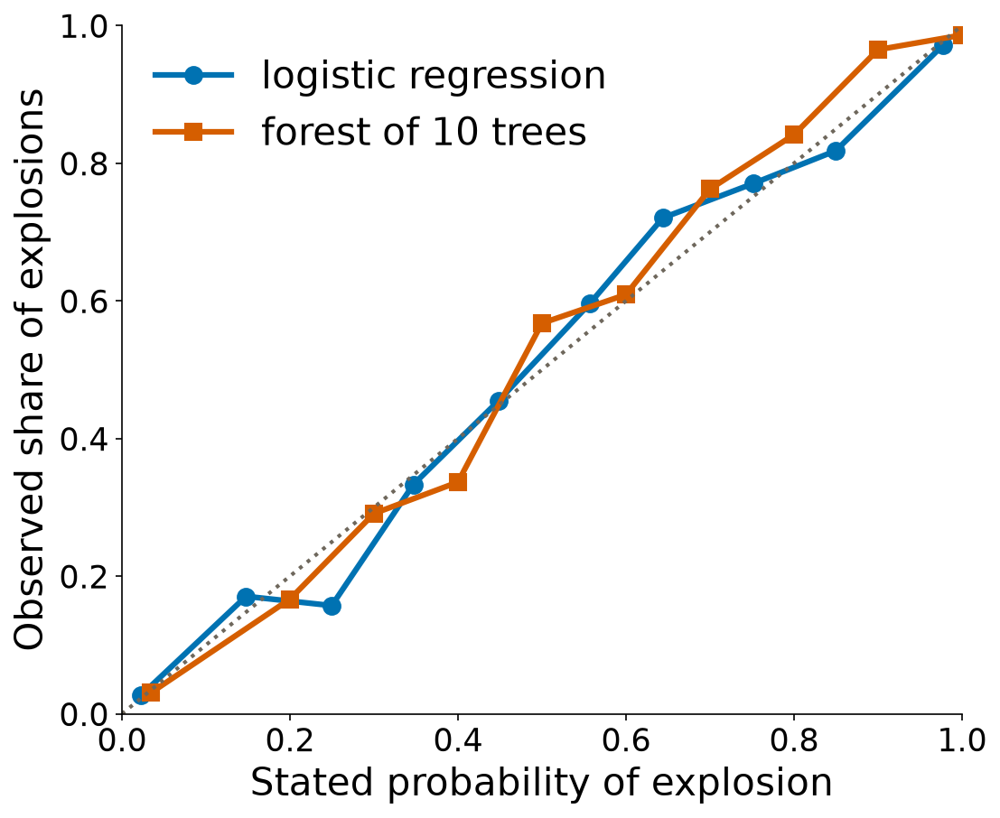
A model is calibrated when stated probabilities match observed frequencies.
Reliability diagram: stated probability against observed share. Calibrated models follow the diagonal.
Brier score: mean squared error of the probability. Weather forecasters have used it since Brier (1950).
| Explosion or earthquake, 5-fold | Accuracy | Brier |
|---|---|---|
| Logistic regression | .902 | .074 |
| Forest of 10 trees | .880 | .087 |
The forest’s probabilities are vote shares among only 10 trees.
Sitka’s warning levels are probabilities: 0.01 and 0.70 mean something only if the model is calibrated. Whoever sets the threshold takes your number at face value.
| Your question | Metric | Today’s example | Misleads when |
|---|---|---|---|
| Is there skill at all? | score against a baseline | .25 for four balanced classes | no baseline is stated |
| What fraction is right? | accuracy, micro-F1 | .884 four classes | classes are unequal: .965 with recall .521 |
| Are real events caught? | recall | .868, or .521 at 5% | alone: trigger on everything |
| Is the trigger list clean? | precision | .931; .15 at Sitka’s lower threshold | alone: one sure trigger wins |
| Both, at one threshold? | F1, MCC | .899, .806 | error costs are unequal |
| Ranking, all thresholds? | ROC AUC, average precision | .963 and .963; .940 and .621 at 5% | ROC AUC with rare positives |
| Do all classes count? | macro-F1, per-class table | .810 against micro .921, unequal classes | a rare class has few samples |
| Is the probability true? | reliability diagram, Brier, log-loss | Brier .074 against .087 | the base rate changes in operation |
A missed event costs science or safety; a false alarm costs analyst time and trust. The metric and the threshold follow from those two costs.
The rules
random_state=2026What this design cannot test
Mon Nov 9 (3.8) builds the splits this dataset cannot run.
git pull, then pixi run jupyter lab → 3.5_multiclass_classification.ipynb; run sections 1 to 4 (data, split, scaling)LogisticRegression(max_iter=5000) on X_train_scaled; compute f1_score(y_test, pred, average="macro"); compare with .884, then look at classification_reportmodel.classes_ and model.predict_proba(X_test_scaled)[:5]: which class would you warn on, at what threshold?results/predictions_<uwnetid>.csv from section “Class leaderboard” and open your pull requestReading: 3.6, gradient descent by hand and calibration. Due Mon Nov 9: homework on scoring clusters. HW-CML assigned today, due Fri Nov 20. Fri Nov 6: trees and forests (3.7, 3.9). Mon Nov 9: robust training (3.8).
ESS 469/569 · Machine Learning in the Geosciences · Autumn 2026